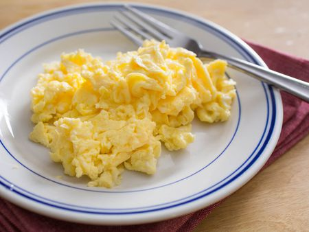

Scrambled eggs

Description
Scrambled eggs are an easy recipe and great source of protein for a quick
and fresh start of the day. It doesn't require much effort and is very tasty, a good option
for carnivores and vegetarians alike!
Ingredients
- Eggs
- Milk
- Butter or Olive Oil
- Salt
- Pepper
- First, beat the eggs. Place them in a medium bowl, and whisk until the yolk
and whites are thoroughly combined. Add the milk or water, and whisk again!
The beaten eggs should be an even yellow color, with no translucent spots or streaks.
- Next, gently preheat the pan. Brush a small nonstick skillet with olive oil, or
melt a little butter inside it. Warm the skillet over medium heat.
- Finally, cook. Pour in the egg mixture, and let it cook for a few seconds,
undisturbed. Then, pull a rubber spatula across the bottom of the pan to form
large, soft curds of scrambled eggs.
- Continue cooking over medium-low heat, folding and stirring the eggs every few
seconds. As you work, make sure to scrape your spatula along the bottom and sides
of the pan to continue to form curds and to prevent any part of the eggs from drying
out.
- For a soft, creamy scramble, stop when the eggs are mostly set, but a little liquid
egg remains. Remove the pan from the heat, and season to taste with salt and pepper.